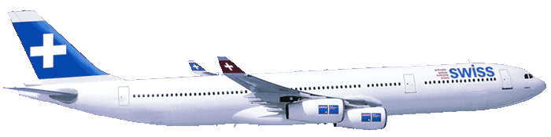

A Világjáró Utazási Iroda

akciós ajánlatai:
Athén
Athén Görögország, valamint a görög Attika prefektúra fővárosa. A modern Athén hatalmas város, az ókorban városállamként nagy hatalommal bírt. Nevét az ősi görög mitológia városvédő istennőjéről, Pallasz Athéné-ről kapta.
Egy hét repülővel 45 000 Ft/fő
Két hét repülővel 80 000 Ft/fő
Egy hét autóbusszal 35 000 Ft/fő
http://www.cityofathens.gr/portal/site/AthensPortal/index.html
Rodosz
Rodosz városa Rodosz szigetének északi csücskén helyezkedik el. A több kultúra emlékét hordozó óváros rendkívül jó állapotban maradt fenn. Az ókori város akropolisza a várostól kb. 2 km távolságra található.
Egy hét repülővel 63 000 Ft/fő
Két hét repülővel 100 000 Ft/fő
Két hét autóbusszal, komppal 95 000 Ft/fő
http://www.rodos.gr/
Az árak az illetékeket nem tartalmazzák!